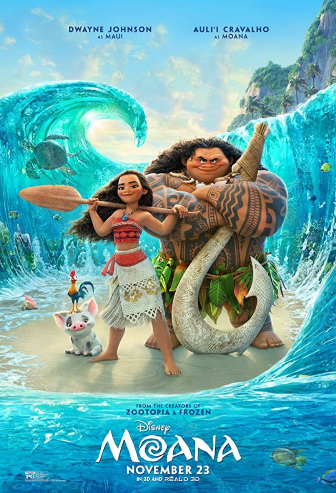

Genre: Fantasy
Release date: 1999
A computer hacker learns from mysterious rebels about the true nature of his reality and his role in the war against its controllers
Directors: Lana Wachowski (as The Wachowski Brothers), Lilly Wachowski (as The Wachowski Brothers)
Writers: Lilly Wachowski (as The Wachowski Brothers), Lana Wachowski (as The Wachowski Brothers)
Stars: Keanu Reeves, Laurence Fishburne, Carrie-Anne Moss.
Genre: Adventure
Release date: 2011
Nine noble families fight for control over the mythical lands of Westeros, while an ancient enemy returns after being dormant for thousands of years.
Creators: David Benioff, D.B. Weiss.
Stars: Emilia Clarke, Peter Dinklage, Kit Harington
Genre:Animation, fantasy
Release date: 2016
Nine noble families fight for control over the mythical lands of Westeros, while an ancient enemy returns after being dormant for thousands of years.
Directors: Ron Clements, John Musker.
Writers: Jared Bush (screenplay by), Ron Clements (story by).
Stars: Auli'i Cravalho, Dwayne Johnson, Rachel House.

Genre:Animation,adventure,fantasy
Release date: 2001
In order to power the city, monsters have to scare children so that they scream.
However, the children are toxic to the monsters, and after a child gets through, 2 monsters realize things may not be what they think. .
Writers: Pete Docter (original story by), Jill Culton (original story by).
Stars: Billy Crystal, John Goodman, Mary Gibbs .